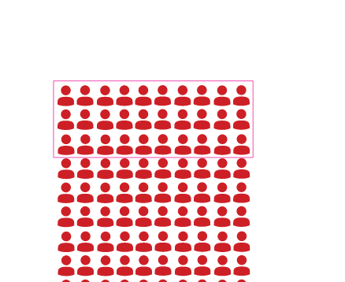

No tópico “Números que indicam porcentagem”, que se inicia na página anterior, é interessante propor aos estudantes que falem sobre a quantidade de mulheres que ocupam cargos políticos.
Debata com o grupo sobre a importância de as mulheres terem representatividade nesses espaços e o motivo pelo qual foi preciso criar uma cota para garantir que haja candidatas.
Esse debate ex-plora o ODS Igualdade de gênero e o TCT Trabalho.
Se achar conveniente, apro-veite para explorar outros valores percentuais utilizan-do o quadro de 100 bonequi-nhos: E 40%, é mais ou menos que a metade? Por quê?
E 60%?
Solicite que expliquem como pensaram.
Aproveite a oportunidade para avaliar os conhecimentos dos estudan-tes em relação à leitura de dados percentuais.
1)
A FIGURA A SEGUIR REPRESENTA UM TOTAL DE 100 PESSOAS.
CONTORNE 30.

Valéria Rezende
SE 30% DAS CANDIDATURAS EM ELEIÇÕES DEVEM SER DE MULHERES, ISSO SIGNIFICA QUE, EM UM GRUPO DE 100 CANDIDATOS, 30 DEVEM SER MULHERES.
A) A QUANTIDADE MÍNIMA DE CANDIDATAS É MAIS OU MENOS QUE A METADE? EXPLIQUE COMO VOCÊ PENSOU.
Menos que a metade. Resposta pessoal.
B) CONVERSE COM OS COLEGAS SOBRE ESSA COTA. VOCÊ ACHA IMPORTANTE TER MULHERES OCUPANDO CARGOS POLÍTICOS?
Respostas pessoais.
LOCALIZAÇÃO
TER UMA UNIDADE DE SAÚDE PERTO DE CASA É UM DIFERENCIAL PORQUE, QUANDO O POSTO É LONGE, É MAIS DIFÍCIL DAR CONTINUIDADE AOS TRATAMENTOS.
PERTO E LONGE SÃO POSIÇÕES RELACIONADAS A UM PONTO DE REFERÊNCIA, QUE, NESSE CASO, É O POSTO DE SAÚDE.
ALGO A MAIS
Sugerimos assistir ao vídeo Neurociência (disponível em: https://www.youcubed.org/pt-br/resources/brain-science/, acesso em: 21 maio 2024).
Esse videoclipe traz novos indicativos sobre o cérebro, comprovando que todos os estudantes podem aprender matemática de alto nível.